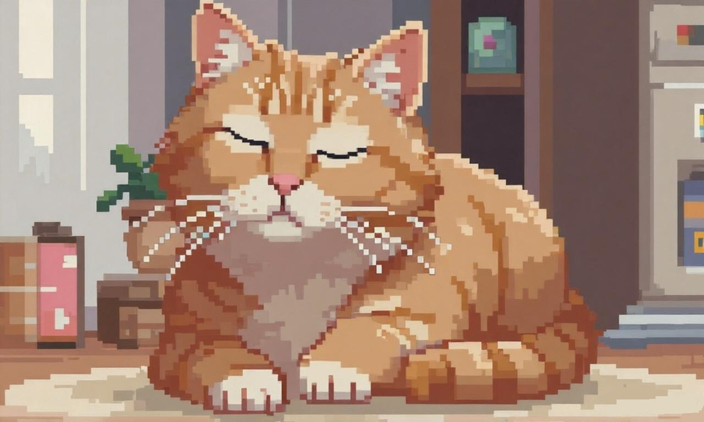

站点简介
概览
近期计划
游戏目录
这个页面是关于游戏的,这个目录下的有些游戏可以通过网址链接访问下载,如果你对游戏做了网页端的适配,我很支持你把网页端的游戏demo使用链接放上来,毕竟直接能玩去体验一下也不错
演示视频:
游戏介绍:
就是很普通的国际象棋游戏,遵守国际象棋的规则
使用WASD控制摄像机的移动,鼠标左键移动视角,按下R键重置棋子位置,按下鼠标中键使摄像机正视棋盘
这个项目还有很多不完善的地方,我以后有可能会维护它(自己写的S山自己吃,没绷住)
这个游戏是我在2025年暑期开发的,当时是为了学习Unity引擎和C#语言
这次想要做一个网站去分享点什么,就拿他开涮了
所以对这个游戏或是网站有什么建议或是想法可以从网站信息获取邮箱发送电子邮件给我,相信我,会看的(前提是有时间)
这也是这个网站的第一个游戏项目,也算本站的镇站之宝了
游戏信息/源码/下载:
项目源代码:
https://github.com/rain-chemms/Chess3D游戏下载:
Android/Windows/WebGL:
https://github.com/rain-chemms/Chess3D/releases/tag/Release-v1.0你说你想要现在就玩?那就点下面开始吧!
在线实时游玩该项目(WebGL项目)程序目录
这个页面是关于一些开源项目的,主要给出它们在GitHub的链接和一些简介,简介能帮助你了解项目,估计随着网页发展,这些项目大概率也是和游戏有关的
系统设置
配置系统偏好设置和网页个性化选项。
你说你想听会音乐?
好吧,这下面的是一个音乐播放器
不用想,没几首歌
音乐播放器
正在播放:
作者信息
基本信息(网站作者)
作者昵称: 于乐先生(John Rain / Sleeply Cat)
邮箱: 2440623951@qq.com
GitHub: https://github.com/rain-chemms
LOGO
作品列表
Chess3D
类别:游戏
作者信息:于乐先生(John Rain)